数值分析的一个基本原则是:求解任何问题都应充分利用它的特殊的结构特性.在数值线性代数中,这意味着当问题中出现诸如对称性,定型性和稀疏性等特性时,需要将适用于求解一般矩阵的算法修改,使其效率更高.这将是本章的主题.我们的主要目的是设计一些特殊的 分解的专用算法.
分解的专用算法.
 和分解
和分解
由前述分解容易证明以下的分解定理:
 和唯一的对角阵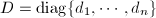满足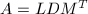.
和唯一的对角阵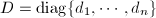满足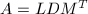.
特别地,在为对称方阵的情形,成立以下分解:
由以上定理可知,对对称阵施行或分解时,工作量可减半.在第 步,由于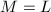且假定
步,由于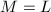且假定 的前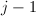列已知,则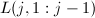也为已知.定义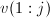为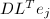的前个分量,则
于是,向量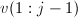可通过对的第行做简单数乘得到.由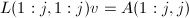的第个方程,有关系式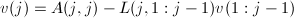.
的前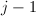列已知,则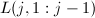也为已知.定义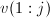为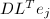的前个分量,则
于是,向量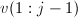可通过对的第行做简单数乘得到.由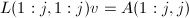的第个方程,有关系式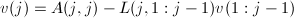.
相应地有以下算法:
本算法大约减少了一半的工作量,需要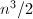个flop.可以证明,当对称且正定时,以上算法不但能够顺利执行完,而且非常稳定[1].如果对称但非正定,则需要结合对称地选主元,即在算法的第步比较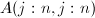得到其中绝对值最大的元素并通过置换阵 的对称作用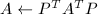将其换到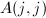位置,使之后的算法稳定执行.
的对称作用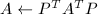将其换到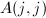位置,使之后的算法稳定执行.
Cholesky分解
可以证明,若是正定的,则在的分解中, 的对角元均大于
的对角元均大于 .然而,仅仅存在分解仍不足以保证分解算法的稳定性.
.然而,仅仅存在分解仍不足以保证分解算法的稳定性.
以下着重介绍对称正定阵的Cholesky分解.
 是对称正定的,则存在唯一的一个对角元大于
是对称正定的,则存在唯一的一个对角元大于 对角元大于,从而得到本定理.
□
对角元大于,从而得到本定理.
□
我们下面导出一个含有大量Gaxpy运算的Cholesky分解算法.比较等式的第列得到
也就是说,
如果 的第列已知,则可计算出
的第列已知,则可计算出 .由上式中各元素间的相等关系推出
于是得到以下算法:
.由上式中各元素间的相等关系推出
于是得到以下算法:

本算法共需个flop.这一算法在正定时相当稳定.
Vandemonde方程组
Vandemonde方程组与下一节将要讲到的正定对称的Toeplitz阵问题是两类重要的能在 的计算量内稳定求解的问题.
的计算量内稳定求解的问题.
设 ,形如
的矩阵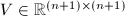被称作Vandemonde矩阵.下面我们讨论线性方程组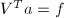及的求解.
,形如
的矩阵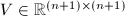被称作Vandemonde矩阵.下面我们讨论线性方程组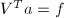及的求解.
Vandemonde矩阵与多项式插值有密切的联系.首先注意到,若有,并定义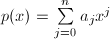,则对于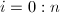, .故若
.故若 是互异的,则可通过构造插值多项式
是互异的,则可通过构造插值多项式 求解.
求解.
第一步是计算插值多项式 的Newton表达式:
常数
的Newton表达式:
常数 是差商,可按以下步骤确定:
下一步是由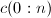产生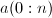.通过迭代
来定义多项式.可求得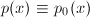.于是系数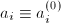可如下求得
是差商,可按以下步骤确定:
下一步是由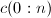产生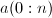.通过迭代
来定义多项式.可求得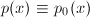.于是系数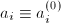可如下求得
 以上两步骤合并即得到求解的算法,共需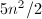个flop.
以上两步骤合并即得到求解的算法,共需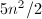个flop.
该算法事实上即多项式插值问题的一般算法.它事实上利用了如下分解 其中 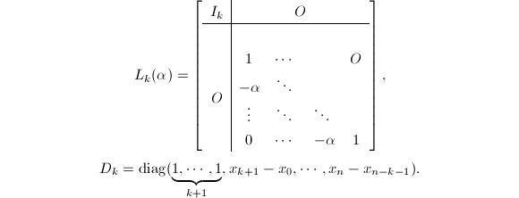于是对于方程组,只要利用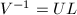即可得到其三角阵分解,从而求解方程组.
对称正定Toeplitz阵及相关问题
设,存在对所有和 满足,则
满足,则 称为Toeplitz阵.Toeplitz阵属于一个更大的反向对称(persymmetric)矩阵类 (即沿反对角线进行"转置"不改变).容易验证,Toeplitz阵及非奇异Toeplitz阵的逆也是反向对称的.本节将利用这一特性给出对称正定Toeplitz阵的的算法.不失一般性,以下均设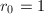.
称为Toeplitz阵.Toeplitz阵属于一个更大的反向对称(persymmetric)矩阵类 (即沿反对角线进行"转置"不改变).容易验证,Toeplitz阵及非奇异Toeplitz阵的逆也是反向对称的.本节将利用这一特性给出对称正定Toeplitz阵的的算法.不失一般性,以下均设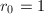.
Yule-Walker问题的Durbin算法
Yule-Walker问题是系数矩阵为Toeplitz阵 ,非齐次项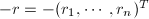的线性方程组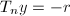.可以看到,这种问题具有很大的特殊性,即它的非齐次项与系数矩阵有密切关系,但它是进一步讨论的基础.设我们已经求解了
,非齐次项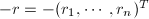的线性方程组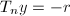.可以看到,这种问题具有很大的特殊性,即它的非齐次项与系数矩阵有密切关系,但它是进一步讨论的基础.设我们已经求解了 阶的Yule-Walker方程组.下面给出如何在内求解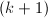阶Yule-Walker方程组,其中为阶反向置换阵:
注意到
由于
阶的Yule-Walker方程组.下面给出如何在内求解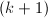阶Yule-Walker方程组,其中为阶反向置换阵:
注意到
由于 ,故有
代入
,故有
代入 表达式
其中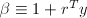是大于的,因Toeplitz阵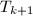为正定的:
进一步利用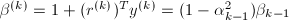,即得到完整的Durbin算法,需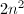个flop.
表达式
其中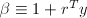是大于的,因Toeplitz阵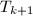为正定的:
进一步利用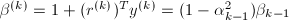,即得到完整的Durbin算法,需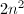个flop.
一般右端向量的Levinson算法
可以用类似方法求解右端为任意向量的Toeplitz方程组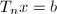.
假设已解出阶Toeplitz方程组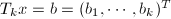,现需求解
同时假定阶Yule-Walker方程组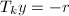的解也已得到.由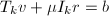可知
这样,我们可在个flop内完成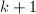阶方程组的求解.全部算法共需个flop.
正定对称Toeplitz阵求逆Trench算法
对称正定的Toeplitz阵的最令人吃惊的性质之一是它的逆可以在个flop内算出.为了得到这个算法,我们将 做如下划分:
由
得到
若
做如下划分:
由
得到
若 是
是 阶Yule-Walker方程组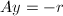的解,则
于是我们得到了的最后一列.
阶Yule-Walker方程组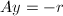的解,则
于是我们得到了的最后一列.
因为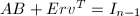,故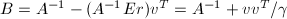.由于是非奇异的Toeplitz阵,其逆是反向对称的,于是
于是我们可以"从外向里"地确定,以阶矩阵为例形象地描述如下:
假定的最后一行和最后一列已知
这里和分别代表未知元素和已知元素.交替利用 的反向对称性和前述递推式,可求出的顺序子块如下:
的反向对称性和前述递推式,可求出的顺序子块如下:
![\begin{gather*}
\underrightarrow{\text{反向对称}}
\begin{bmatrix}
k& k& k& k& k& k\\
k& *& *& *& *& k\\
k& *& *& *& *& k\\
k& *& *& *& *& k\\
k& *& *& *& *& k\\
k& k& k& k& k& k
\end{bmatrix}
\underrightarrow{\text{递推关系}}
\begin{bmatrix}
k& k& k& k& k& k\\
k& *& *& *& k& k\\
k& *& *& *& k& k\\
k& *& *& *& k& k\\
k& k& k& k& k& k\\
k& k& k& k& k& k
\end{bmatrix}\\
\underrightarrow{\text{反向对称}}
\begin{bmatrix}
k& k& k& k& k& k\\
k& k& k& k& k& k\\
k& k& *& *& k& k\\
k& k& *& *& k& k\\
k& k& k& k& k& k\\
k& k& k& k& k& k
\end{bmatrix}
\underrightarrow{\text{递推关系}}
\begin{bmatrix}
k& k& k& k& k& k\\
k& k& k& k& k& k\\
k& k& *& k& k& k\\
k& k& k& k& k& k\\
k& k& k& k& k& k\\
k& k& k& k& k& k
\end{bmatrix}\\
\underrightarrow{\text{反向对称}}
\begin{bmatrix}
k& k& k& k& k& k\\
k& k& k& k& k& k\\
k& k& k& k& k& k\\
k& k& k& k& k& k\\
k& k& k& k& k& k\\
k& k& k& k& k& k
\end{bmatrix}.
\end{gather*}](latex/latex2png-SpecialLinearEquation_261692265_.gif) 当然,当求解一个既对称又反对称的矩阵时,只需求解矩阵的"上楔形"即可,即
由以上分析,不难得到对于
当然,当求解一个既对称又反对称的矩阵时,只需求解矩阵的"上楔形"即可,即
由以上分析,不难得到对于 阶正定对称Toeplitz阵的求逆算法,称为Trench算法.它需要个flop.
阶正定对称Toeplitz阵的求逆算法,称为Trench算法.它需要个flop.
Cybenko(1978)年对上述各算法做了误差分析,认为其稳定性与Cholesky方法相当.
最后指出,以上两节涉及到的Vandermonde矩阵和Toeplitz矩阵与快速Fourier变换(FFT)有密切的关系，使得特定形式的矩阵与向量乘法可以FFT速度计算。可参见[2]和[3].
参考文献
[2]矩阵计算, 科学出版社, 2001.
[3]Computational Frameworks for the Fast Fourier Transform, SIAM Publications, Philadelphia, PA, 1992.